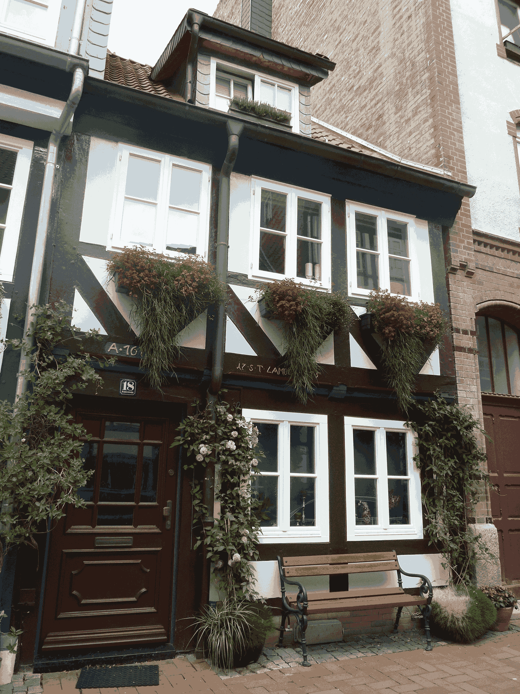

Фритрек и нулевой спринт: Подготовка к работе
Что внутри

Это было самое начало пути. На этом этапе важно было проникнуться основами и настроиться на учёбу. И, возможно, подумать, как новые знания могут повлиять на ваше будущее.
Решение о том, что стоит освоить новую сферу далось нелегко. Фулстек - звучало красиво, но жутко от того, что за этим словом скрывался огромный пласт неизвестности.